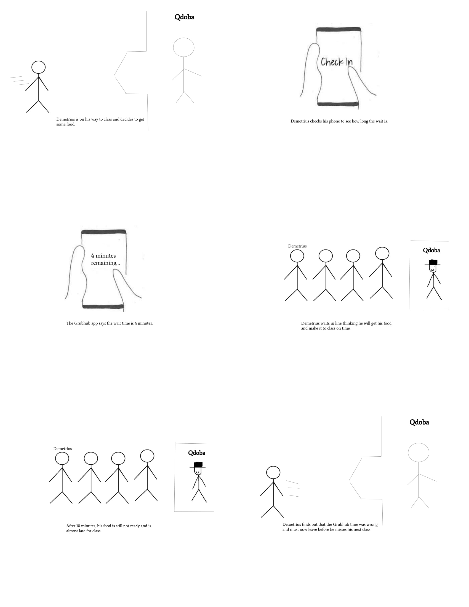

Problem statement: Long Lines
Arriving to a food court before your next class and seeing a long line without warning. Long lines are the worst especially when you can't see when they will appear. We need to figure out how to fix this problem.
Arriving to a food court before your next class and seeing a long line without warning. Long lines are the worst especially when you can't see when they will appear. We need to figure out how to fix this problem.

The Diagram to the left shows ways that help resolve our problem at hand. Long Lines are annoying for everyone and here are some ways that we can fix them.

My name is Demetrius Johnson. I really like money. Like really really like money. Money is everything to me. So I will continue to be a fry cook.

A live representaion of how Long Lines are impacting students

Rough Draft of the Long Lines at hand

The prototype starts off with the main screen. After this screen, you are taken to a sign up screen where you enter your email, username, and password. After the sign up screen, you are taken to the main page where you begin to select where you want to order from. Select your resturant, then begin to pick your food selection. Once you pick your food selection, you are taken to the shopping cart where you review your order. By clicking continue, you are given an estimate of how long the wait will be if you submit the order. You are given the option to cancel the order if the wait isn't right for you.

The Hi-Fi Prototype Long Lines app consists of the ins and outs of the workings of the app.It consists of the welcome page, resturant choice page, and estimated wait time page. It is a 3 page HiFi draft of the app we are going for.